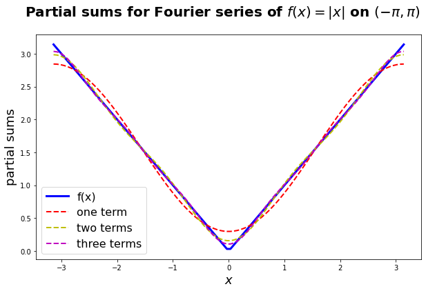
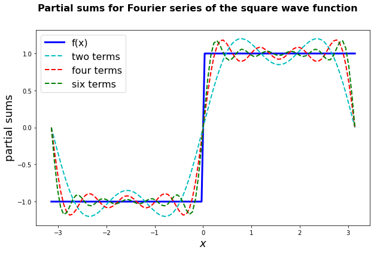
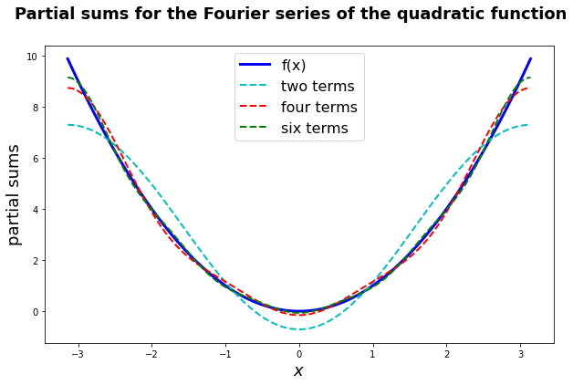

2.2 Fourier Series for Functions of Period \(2\pi\)#
Let \(f\) be a function of period \(2\pi\). We would like to get an expansion for \(f\) of the form
where the \(a_n\) and \(b_n\) are constants. Remember that \(\sin(nx)\) and \(\cos(nx)\) are periodic with period \(2\pi\).
Such an expansion is know as a Fourier series (FS).
We have two questions to answer about the above series:
Question 1: If the series on the RHS of the above equation converges, can we find constants \(a_0, a_n\) and \(b_n\) in terms of the function \(f\)?
Question 2: with these \(a_n, b_n\), for what values of \(x\in\mathbb{R}\) does our FS equation hold?
Question 1#
Suppose the above equation is true and that we can integrate it term by term (i.e the series on the RHS above converges uniformly) so that
since
we must have
Thus if equation (11) holds, then we know \(a_0\).
Lemma 1
Let \(n, m\in\mathbb{N}\backslash 0\). We then have the following equalities:
where \(\delta_{mn}\) is the Kronecker delta defined by
Proof. Equation (12) is trivial as \(\sin(mx)\cos(nx)\) is odd. For equation (13) we compute, for \(n\neq m\),
If \(n=m\) we have
Similar computations yield equation (14).
Thus to find \(a_n\) and \(b_n\), we assume equation (11) is true. Multiplying both sides by \(\cos(mx)\) and integrating term-wise gives
The first term on the RHS is equal to zero (by symmetry) for \(m\neq 0\). Using Lemma 1 for the remaining terms gives
and hence
Note that this also holds for \(m=0\) (which explains the factor of 1/2).
Multiplying equation (11) by \(\sin(mx)\) and integrating term-wise, we similarly obtain
Definition 5 (Fourier series)
Suppose \(f\) is such that
exist. Then we shall write
and call the series on the right-hand side the Fourier series for \(f\), whether or not it converges to \(f\). The constants \(a_n\) and \(b_n\) are called Fourier coefficients of \(f\).
Example 15
Find the Fourier series of the function \(f\) which is periodic of period \(2\pi\) and such that
To find \(a_n, b_n\) first notice that \(f\) is even, so that \(f(x)\sin(nx)\) is odd and
for every \(n\). Also, \(f(x)\cos(nx)\) is even, so
Note that this is not valid for \(n=0\). In fact, \(a_0=\pi\).
If \(n\) is even, \(n=2m\) say, we have
If \(n\) is odd, \(n=2m+1\) say, we obtain
The Fourier series expansion of the given function is therefore
Below we use Python to plot the FS approximations (with 1, 2 and 3 terms) of \(|x|\) (shown in blue) on the range \((-\pi, \pi)\). We see that it is in excellent agreement.

Sine and cosine series#
Let \(f\) be \(2\pi\)-periodic. If \(f\) is odd then
where
i.e. \(f\) has a Fourier sine series. In this case \(a_n=0\) because \(f(x)\cos(nx)\) is odd.
If \(f\) is even then
where
i.e. \(f\) has a Fourier cosine series.
Question 2#
Recall question 2: with these \(a_n, b_n\) when, if ever, is equation (1) true? Consider what happens in the following example.
Example 16
Find the Fourier series of the function \(f\) which is periodic of period \(2\pi\) and such that
The function \(f\) is known as the square wave function.
To find the \(a_n, b_n\) first notice that \(f\) is odd, so \(f(x)\cos(nx)\) is odd so that
for \(n = 0, 1, 2, \ldots\). Also, \(f(x)\sin(nx)\) is even, so
The Fourier series expansion of the given function is therefore
Noting that
we can reduce equation (15) to
Consider question 2 for this case: when is
Recall that
means \(\displaystyle \lim_{n\to\infty} s_n(x)\) where
The question is therefore, does \(s_n(x)\) converge for each \(x\)? If it does, is the limit \(f(x)\)?
The python script below (click the tab to view it) plots an approximation of the square wave function (shown in blue) consisting of 2, 4 and 6 terms of the Fourier series in (15). We see that the FS appears to be converging to the function as we increase the number of terms, although not as quickly as the series in Example 16. In particular, there appears to be an issue at zero…

Example 17
Find the Fourier series of the function
such that \(f(x) = f(x+2\pi)\) outside of this region.
Since the function is even we know that \(b_n=0, \forall n\).
Now,
and
Thus the FS of the function in (16) is
Below we use Python to plot the FS approximations (with 2, 4 and 6 terms) of \(x^2\) (shown in blue) on the range \((-\pi, \pi)\). We see that it is in excellent agreement.
